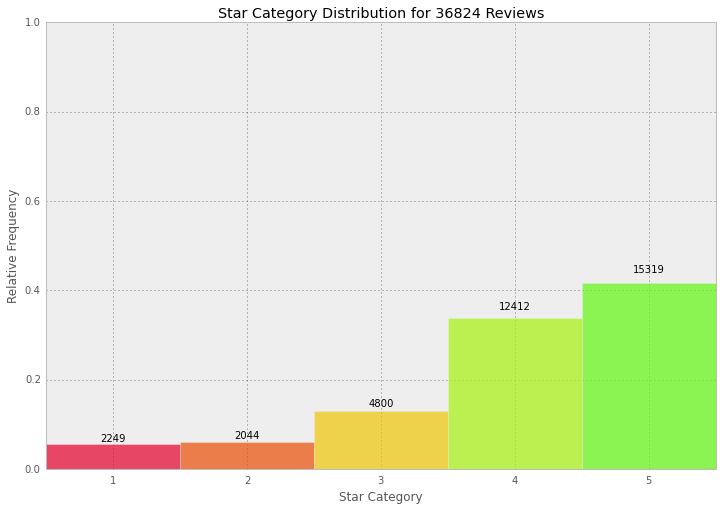
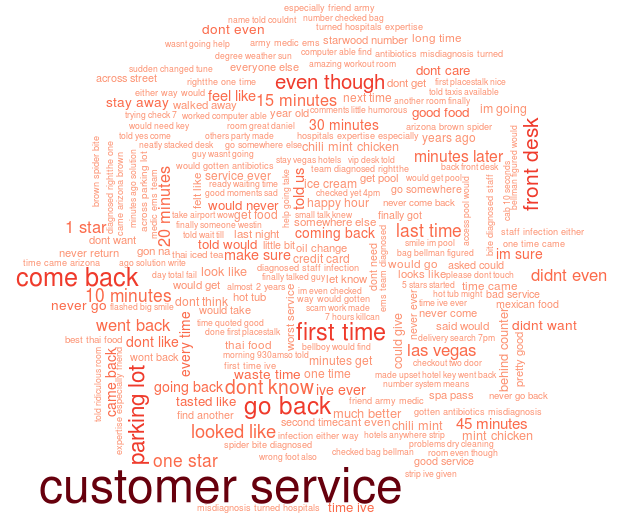
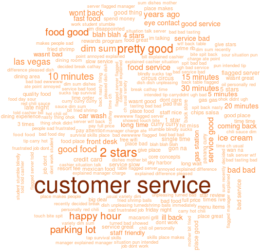
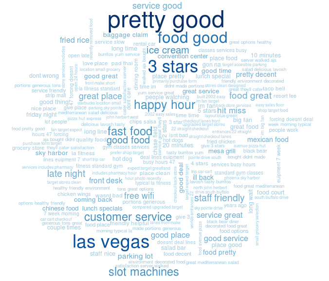
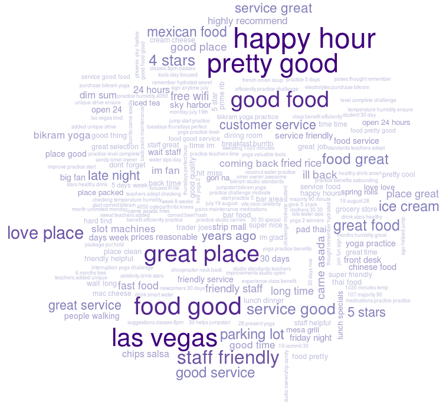
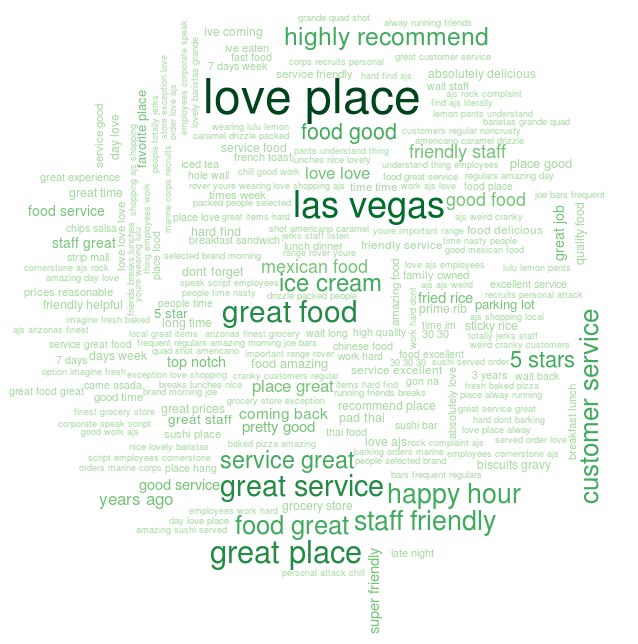
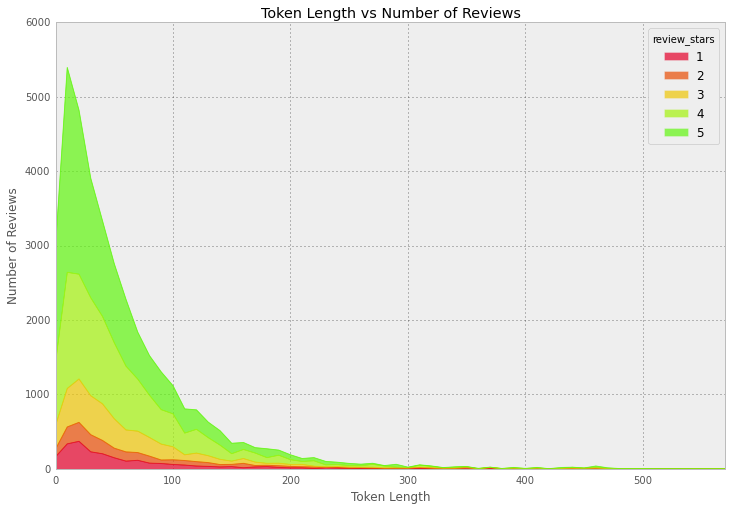
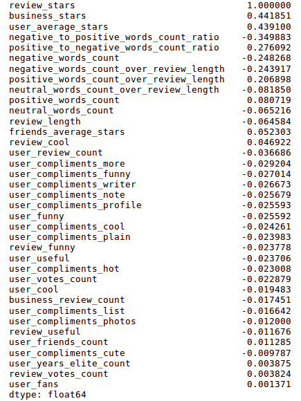

Presented by Kevin Hung and Henry Qiu Representing the DSSS @ UCSD
View the Project on GitHub kevin11h/YelpDatasetChallengeDataScienceAndMachineLearningUCSD
In winter of 2014, the enthusiastic students of DSSS at UCSD entered the Yelp Dataset Challenge in order to witness how the era of Big Data impacts the business decisions of professional social review services like Yelp. In our data analysis, we determine the difficulty in predicting user's review stars given the reviews they left as well as provided our best classification model, and also added in a few visualizations for fun.
The first thing we noticed that the Reviews table was large so we divided it into quarters. Then we simply sampled the first quarter of the Reviews and inner-joined it with the key-ids from Tips, Users, and Businesses table and ended up with the TURBO subset with 37K records (Tips, Users, Reviews, Only). We later on use the Checkins table in order to find the top businesses in our similarity matrix visualization.
In beginning our analysis, we were initially surprised to see that the review distributions in our subset are skewed to the 4 and 5 star categories, making up around 80% whereas the 1, 2, and 3 star categories are only 10% at most.  This is confirmed by a separate analysis by Max Woolf on 1 and 5 star reviews that showed, excellent visualization aside, that Yelp reviews have started to appear more biased optimistically as time passes. Our sample subset reflects this pattern on distribution, although uneven class distribution will become noteworthy in our predictive analytics task.
Next we were curious about what kinds of words, including unigrams, bigrams and trigrams, are characteristic of different star categories so we threw in some quick wordcloud visualizations using the R tm package.
    Lesson learned: if I were to start a successful business, my best bets are to open a Mexican-Chinese-BBQ buffet at Sin City with convenient parking, available Wifi, icecream on the menu, and lovely and friendly crew members.
In EDA, we're trying to find pertinent features for the next step in predictive analytics/machine learning task, so we thought to do some factor analysis on the review text (e.g. average token length between star classes, positive/negative words rate per review, average star given by friends of reviewers, etc). We noticed after preprocessing by stemming, removing stopwords, and tokenizing the review text, the average token length sits around 20-30 tokens for all classes and mainly ranges between 0 and 150 tokens.
Later on in the predictive analytics task we attempted to improve our classification accuracy and we returned to feature engineering and finding correlations between factors, but we will include it here under the EDA section for organization. We correlated nearly all of the given base factors from each table except for business attributes and review dates, and included new factors like average friend stars and negative/positive word ratios.
Most of the upper triangle of the correlation is highly correlated of course because they come from the same user table, but of particular interest to us is the bottom row on the yaxis, the Review Stars entry. This row shows us possible explanatory variables or good features we can incorporate in the next step of our predictive analytics task, in which we predict the star category given a Yelper's review. Below, we see that review stars is correlated highly with the average business star, the reviewer's average star given, negative to positive word ratio, and negative and positive word rates. The first two factors are a helpful giveaway since they are averages of review stars. However, we chose not to use them so that our classifier model is robust in applications where average business star or the user's average star is unknown. Finally, positive and negative word rates are good indicators and correlate positively and negatively accordingly with star category, and we will see later on in the predictive analytics task that the Naive Bayes naturally uses the positive and negative word rate as conditional probabilities/relative frequencies in its algorithm.
We then used MDS and visualized reviews grouped by business and word similarities, and we see that businesses are similar in their specific product and not on their star category, whereas words are similar if they appear close to each other such as when they are bigrams (e.g. slot machine).
That pretty much describes the EDA, and we included a business similarity matrix for the top checked in places for fun.
You can @mention a GitHub username to generate a link to their profile. The resulting <a> element will link to the contributor's GitHub Profile. For example: In 2007, Chris Wanstrath (@defunkt), PJ Hyett (@pjhyett), and Tom Preston-Werner (@mojombo) founded GitHub.